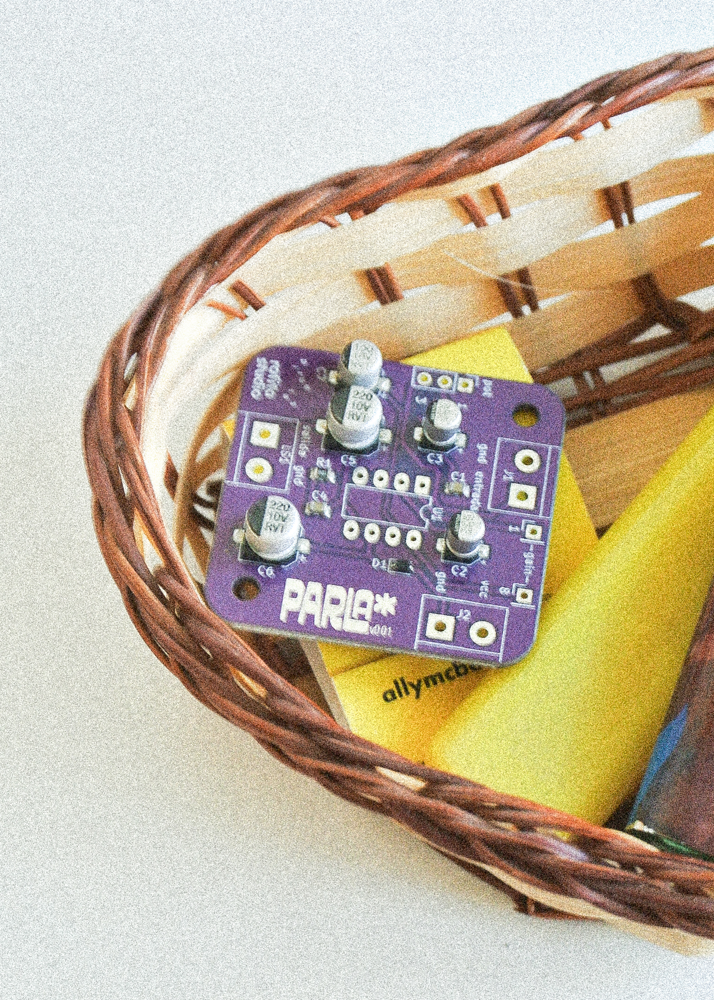

parla es un proyecto de piruetas, en colaboración con
rafita studio y misaa.cc.
es un pequeño parlante con un amplificador mono, para
uso con sintetizadores.
nace en respuesta a los altos costos de parlantes con
bluetooth, y a que muchos de ellos hoy en día ya no
cuentan con entrada vía cable.
parla is a project by piruetas, in collaboration with
rafita studio and misaa.cc.
is a small speaker with a mono amplifier, for use with
synthesizers.
was born in response to the high cost of bluetooth
speakers, and the fact that many of them no longer
have a cable input.
para este proyecto hicimos 50 PCBs, de las cuales 5
están disponibles en este formato PCB con componentes
SMT.
este producto consiste en la PCB del proyecto,
diseñada en santiago de chile, ensamble SMD en hong
kong.
no incluye circuitos integrados, ni potenciómetro, ni
parlante, ni carcasa.
entrega en santiago de chile.
for this project we made 50 PCBs, of which 5 are
available in this format as PCB with SMT
components.
this product consists of the project PCB, designed in
santiago de chile, SMD assembly in hong kong.
does not include integrated circuits, potentiometer,
speaker, or enclosure.
delivery in santiago de chile.
👁️ nota: para esta primera versión se requiere una correccion de polaridad vcc y gnd. 👁️ note: for this first version a vcc and gnd polarity correction is required.
empresa: @piruetas.xyz
concepto:
@montoyamoraga
pcb: @misaa.cc
gráfica y fotografía: @rafita.studio
logística:
@jnsplv
tipografía: @uno_ca
company: @piruetas.xyz
concept: @montoyamoraga
pcb:
@misaa.cc
graphic design and photography: @rafita.studio
logistics:
@jnsplv
font: @uno_ca